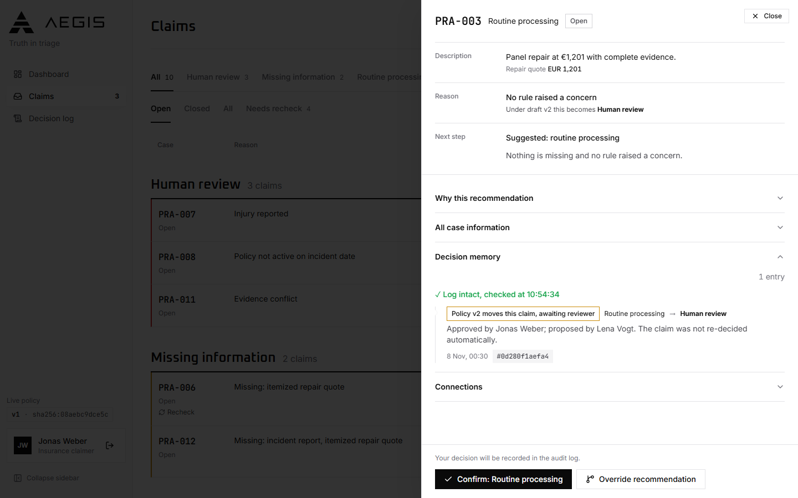
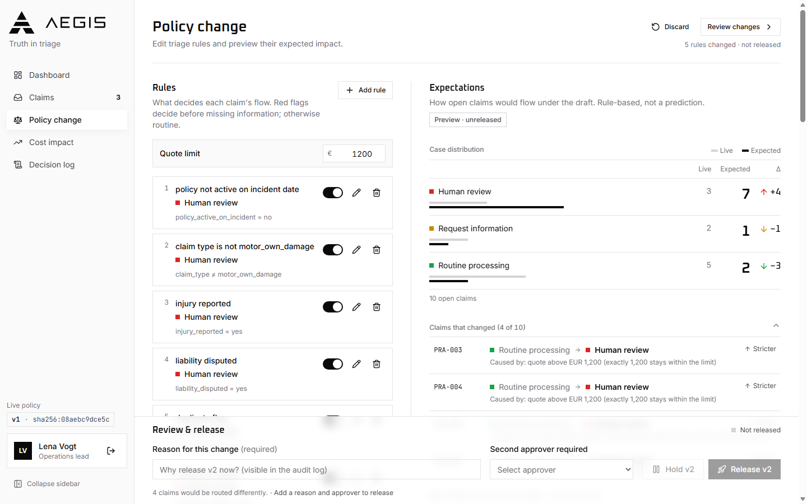

1. The queue: every open claim, grouped by outcome, with the count for each. One recommendation per claim, with its reason.

2. A claim and its decision memory: the policy change that moved it, who proposed and approved it, and a check that the log is intact. The claim is not re-decided automatically.3. The decision log: every override and policy decision with who decided, why, and the policy in force. Append-only and hash-chained; searchable by case, person and reason.

4. The policy change screen: the effect of a rule change on open claims before release, and a second approver required to release it.